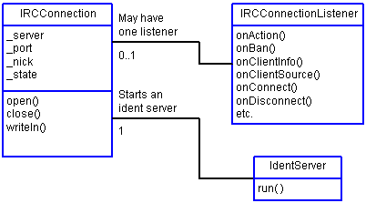

|
|||||||||
| PREV PACKAGE NEXT PACKAGE | FRAMES NO FRAMES | ||||||||
See:
Description
| Interface Summary | |
| IRCConnectionListener | Implement this interface to listen to an IRCConnection. |
| IRCConstants | IRC reply and error numbers specified in RFC-1459. |
| Class Summary | |
| IdentServer | Implements a "one-shot" ident authentication server. |
| IRCConnection | A socket connection to a RFC-1459 compatible IRC server. |
| IRCConnectionAdapter | Do-nothing implementation of IRCConnectionListener to make it easy to derive new connection listeners. |
| Exception Summary | |
| IRCException | Exception that caused disconnection from IRC server. |
The org.relayirc.core package provides low level IRC connection functionality such as opening a connection, writing commands to a connection and closing a connection. Depends on the org.relayirc.util package and a Java 1.1 compatible subset of the Java class libraries. Why Java 1.1? We want to be able to use the Relay IRC core classes to write IRC applets, applets must run within web browsers and these days the major web browsers support only Java 1.1.

|
|||||||||
| PREV PACKAGE NEXT PACKAGE | FRAMES NO FRAMES | ||||||||